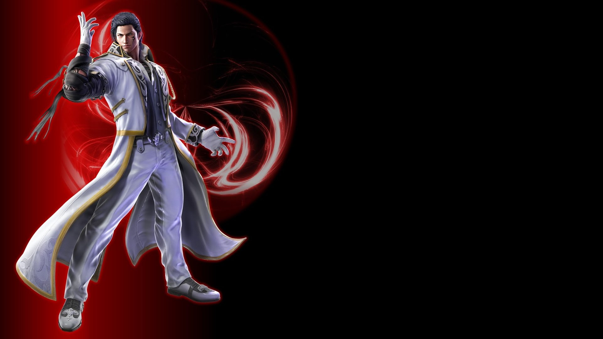
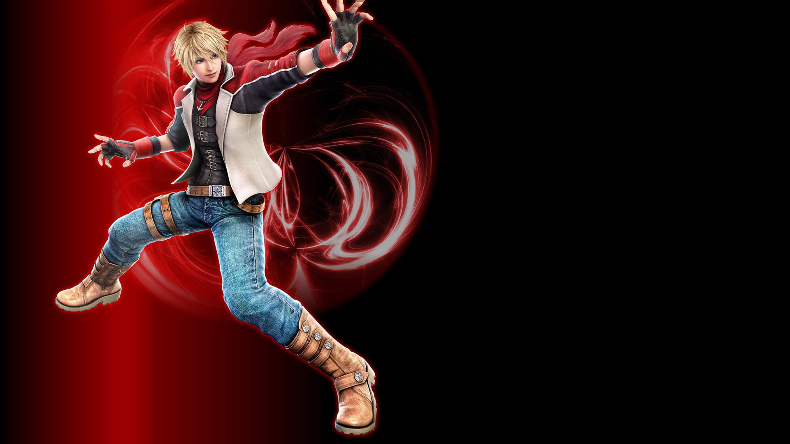

CHARACTERS
The Mallo
He is a The Mallo so that comes with the perks of Mallo chars with a dominating space control with EWGF, hard-hitting lows,
and a wavedash which allows him to cover the gap between himself and the opponent at his own pace and allows him to vary
the timing on his pressure.
Once he is in your face, he has access to some of the best mids in the game to allow him to score CHs on his opponents and
harass them with jab strings. However he does lack low pokes meaning he relies more game to open his opponents up.
Advantages: Super Hit
The Dji
The Dji is arguably the biggest turtle in the series. He has huge reach on his arms allowing him to effectively keep the
opponent out with jabs and mids. His main low pokes are extremely fast at i12, do good damage as well as granting decent
frame adv on hit.
If Dji has you trapped at the wall, be prepared to lose quite a bit of life fighting out of his poke game. For a defensive
character, he plays the passive aggressive game pretty well and can keep up with a fast paced game.
Advantages: Great Sheild
The Wan
The Wan is the 50/50 powerhouse of the game. Wan is a character that wants to be in his opponent’s face constantly and
enforcing hard hitting mixups on them. Between his demoman (a damaging knock-down low) and a variety of mids, he puts
the fear into the opponent.
Since he only knocks-down point blank, it is encouraged to take the opponent to the wall as soon as possible
as Wan, as they cannot backdash away from the demoman allowing him to loop his mixups.
Advantages: Fast to run

The Mond
The Mond is a pretty relentless character in T7 in terms of pressure tools. He has the best approach tools of any character
with his WR2, a hugely + on block mid that CH launches. It can be scary to approach Dragunov as it is a very flexible tool
in terms of rushdown + keepout.
He has access to a low launcher which is very hard to see and this goes hand in hand with his strong approach. Outside of
his WR2, Mond has some very strong mids to use upclose for keeping + frames on the opponent and keeping them in check.
This allows him to be constantly in your face while chipping away at you with effective low and mid pokes.
Advantages: Great Wind

The Mad
The Mad lacks kicks for the most part but he uses sways for the designated
kick buttons. While pretty much every character has some form of CH fishing game, Steve is notoriously designed around it.
He has some of the best CH tools the game has to offer.
He has an unorthodox way of opening his opponent up as rather than relying on mid/low mixups to get damage, Steve relies
on using his powerful CH tools to score a big opening.
Advantages: Long strength
The Drach
The Drach is an okizeme monster. She has a strong poking game with tons of poke lows for various situations including hugely + hit, a ranged CH launcher
and a heavy hitting low in her stance.
Her stance Art Of Phoenix (AOP) allows her to evade a lot of moves and offense from your opponent reducing their moveset
by a lot depending on the character. She's a character for lab monsters. Her small hitbox along with her evasive stance
can make her extremely hard to approach especially with her main mid poke going under highs.
Advantages: Swings hand
The Hunt
The Hunt is one of the most open-ended characters in the game, meaning he can be played in a variety of playstyles. His
offense is scary with strong low pokes that high crush, leaving him in the opponent’s face for followup pressure. It
can be difficult to mash and move out of Feng’s pressure.
Hunt has a low out of his sidestep that trips up opponents point blank for a combo, and he has plenty of strong mids to
complement him in this mixup scenario. He has a good selection of risk/reward situations so he can choose freely depending
on the situation.
Advantages: Great shoot
The Kor
The Kor is a bit of an extreme character. She has a very powerful but linear gameplan which suffers against those who
sidestep. This is because overall her tracking is weak. Very few of her moves track and her homing moves either lack
range or are slow.
However to make up for this weakness, she has the best sidestep in the game allowing her to get around sequences that
other characters can’t avoid. She can make the opponent hesitate and second guess their retaliation to her offense due
to the threat of her stepping and forcing them to whiff.
Advantages: Swings hand
The Hold
The Hold has an extremely small moveset to work with to be effective. She is based around offensive pokes and likes to be
up in the opponent’s face to chip them down with her strong hitconfirm mids. She has good poke lows which leaves the
opponent in her face at a significant disadvantage.
She can loop her poke situation over and over until you challenge her. The Hold has access
to a projectile which causes chip damage on block, not very useful but it’s a novelty.
Advantages: Great Hit
The Dold
The Dold is a very aggressive, poke-oriented character. She’s good at bullying her opponent with quick mids, lows and jab
strings, to break them down bit by bit. She has a few moves which leaves her backturned. This gives her access to the one
of the most damaging combo starters in the game, as well as being hitconfirmable.
Her Rage Art is unique in the fact that there’s a rhythm to it that allows her to get extra damage as well as different
poses/animations to end with. Her range is lacking a little on her arms so it’s encouraged to get in the opponent’s face
with Chloe to initiate her poke game.
Advantages: Very aggressive
The Dage
The Dage excels in a lot of areas. Has a very high damaging poke game. Has extremely strong space control with f4, a CH
launching mid with huge range which can be made safe on block. Has great mobility as a result of wavedashing and can close
the gap in an instant.
He has great tools out of the wavedash such as a comboable low, a mid launcher mainly used for whiff punishing or as a mid
option. He is a very versatile character, can be played offensively with his strong poking game and wavedash mixup and
strong block/whiff punishment.
Advantages: High damaging